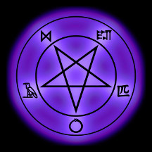
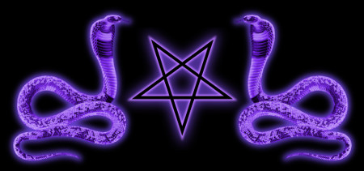

The Order of the Serpent (O.S.) is an esoteric school of the Western Left Hand Path. It is comprised of unique individuals and philosopher-Magicians, dedicated to the study and practice of Self-Directed Self-Evolution (also known as Xeper, Black Magic, or other terms). The Order is dedicated to the accumulation and preservation of the knowledge and undefiled wisdom of the Prince of Darkness. The focus of the O.S. is the Individual Self, both as in one’s personal development and the concept or Form of the Individual Self. The O.S. founders believe that we all have individual hidden truths within ourselves, and our goal is to uncover, and ultimately become the perfect manifestation of these truths.
The O.S. is rooted in extreme individualism, and its members are capable of working with a concept and forming their own thoughts, ideas, and understanding of them. Discussion and rational debate are both welcome and encouraged. Those involved are able to form their own belief systems, tables of correspondences, tools of initiation, and able to forge their own unique path. Unlike most other metaphysical ideologies which seek to dissolve the self, subjugate it to questionable beings, or even deny its existence by reducing it to pure matter, the O.S. seeks to increase its own freedom of Mind and Will, and that of others. It recognizes the Self, the one thing each being can truly know to exist, as the center of reasoning, as well as the center of society. Rather than seeing humans as deterministic slaves, fallen beings in need of saving, or creatures meant to serve the State, the Order believes that Self-Actualization at the individual level is the key to human advancement. In a world where humans are little more than statistics, the Order of the Serpent recognizes that all change, as well as all knowledge, begins with the individual Self.
Unlike a symbolic occult organization, some sort of statement, or simply a self-help group, the O.S. is an esoteric organization, founded upon the metaphysical position that there is something beyond the simple world of matter and psychology. Whether the creator God of the West, the mindless Nature of materialism, or flowing Way of the East, the Order of the Serpent recognizes these as one in the same, an order imposed upon chaos that underlies, creates, and drives the entire cosmos. The difference with the Esoteric Western Left Hand Path, the O.S. included, is that we do not accept that this order is complete, wholly deterministic, or even necessarily “good.” It is what leads to cancer and depression, starvation and war, whether it allows this to happen, determines it, or is un-intelligent and cannot do otherwise. Yet in the individual we have free will, the ability to go against this Natural Order or malevolent God. This ability has been demonized, described as an illusion, or even completely ignored specifically because it can go against Nature/God, which is why “self-directed self-evolution” has been associated with “black magic” for so long in Western society.
More specifically, the Order of the Serpent is founded in its own metaphysical view of Neo-Platonism. The founders accept the objective existence of the Realm of Forms, which is separated into Simple Forms (which cannot partake in themselves, such as “Pointedness”), and Complex Forms (which partake in themselves, such as “Consciousness” or “Knowledge”). The Complex Forms, being abstract, necessary, non-spacial, and non-temporal, yet also conscious, self-aware, and knowledgeable, are themselves indistinguishable from traditional polytheistic gods. Indeed, “gods” are more simply seen as a perversion of Complex Forms, a misunderstanding. While there is no central “god-head” within the Order, there is a certain henotheistic focus on Forms of Consciousness, Inspiration, Art, Intoxication, Self-Awareness, Knowledge, and so forth.
The name for the Order of the Serpent comes from the Northern Circumpolar Stars, specifically the massive constellation Draco, which never sets below the horizon. To the earliest human religions, these were seen as being free from the cycles of the moon, sun, planets, and even constellations and stars. Separate from the ebb and flow of Nature/”God”, those associated with the Imperishable Stars were free to permanently exist, to forge their own path free from those cycles. It was only later on that world religion began to dissolve into its current Solar form. The Order of the Serpent hopes to remanifest this ancient, Pre-Solar metaphysics in the modern day - within the 21st century.
The insignia of the Order is a pentagram, representing that point of inner-consciousness where the individual Self exists. The pentagram is within a circle representing the physical shell of the Self, but the points of the pentagram do not touch this circle, symbolizing the continued separation between Self and Body. The separation of the metaphysical (pentagram) from the physical (circle) exists because the elements of both are independent and distinct from one another. Stemming from this pentagram are five symbols, from Norse, Sumerian, Egyptian, Chinese, and an ouroboros as a stylized O. It is meant to represent the diversity of interests within the O.S. We are not simply a Setian, Thelemic, Asatru, Hermetic, Luciferian/Satanic, or any single approach, but a place for such individuals to help each other grow, and help share useful information.
The Order of the Serpent provides such resources currently as the Library of the Ancient Serpent, the O.S. forums, and the Order newsletter "The Imperishable Star". The forum is meant to provide a Left Hand Path online community focused on rational, esoteric discussion. The Imperishable Star provides essays written by members in order to share esoteric knowledge with the outside world. Both are open and free to all. The O.S. does not have any initiatory hierarchy, all members are equal, from the founders to someone on day one. There are no membership fees, but we simply ask members to provide and discuss esoteric information, such as for publication in the newsletter. We do not believe in hoarding occult knowledge behind closed doors and paywalls, and try to keep the occult community updated on our progress. The application process is simply an email discussion with the founders, and an essay on pretty much any relevant topic of the applicant’s choosing.
We hope that you benefit from these resources, and encourage both followers of the Left Hand Path, and respectfully interested individuals, to join the forum absolutely free of charge and without membership. Those interested in aiding with our goal advancing and sharing esoteric knowledge, in and for the modern age, please feel free to send an enquiry email to leviathanite@gmail.com, to start a thread on the forum, or to private message Xepera maSet, Setamontet, and Onyx on the forum.

Copyright (c) 2017 Order of the Serpent.org